pacman::p_load(sf, spdep, sfdep, tmap, tidyverse, smoothr, lubridate, nngeo, Kendall)Take-Home Exercise 2
1.0 Overview
Dengue Hemorrhagic Fever (in short dengue fever) is one of the most widespread mosquito-borne diseases in the most tropical and subtropical regions. It is an acute disease caused by dengue virus infection which is transmitted by female Aedes aegypti and Aedes albopictus mosquitoes. In 2015, Taiwan had recorded the most severe dengue fever outbreak with more than 43,000 dengue cases and 228 deaths. Since then, the annual reported dengue fever cases were maintained at the level of not more than 200 cases. However, in 2023, Taiwan recorded 26703 dengue fever cases.
1.1 Objectives
The specific tasks of this take-home exercise are as follows:
Using appropriate function of sf and tidyverse, preparing the following geospatial data layer:
- a study area layer in sf polygon features. It must be at village level and confined to the D01, D02, D04, D06, D07, D08, D32 and D39 counties of Tainan City, Taiwan.
- a dengue fever layer within the study area in sf point features. The dengue fever cases should be confined to epidemiology week 31-50, 2023.
- a derived dengue fever layer in spacetime s3 class of sfdep. It should contain, among many other useful information, a data field showing number of dengue fever cases by village and by epidemiology week.
Using the extracted data, perform global spatial autocorrelation analysis by using sfdep methods.
Using the extracted data, perform local spatial autocorrelation analysis by using sfdep methods.
Using the extracted data, perform emerging hotspot analysis by using sfdep methods.
Describe the spatial patterns revealed by the analysis above.
2.0 Setup
3.0 Data Wrangling
3.1 Loading the datasets
tn <- st_read(dsn="data/geospatial",
layer="TAINAN_VILLAGE")Reading layer `TAINAN_VILLAGE' from data source
`C:\chesterchia\IS415-GAA\Take-home_Ex\Take-home_Ex02\data\geospatial'
using driver `ESRI Shapefile'
Simple feature collection with 649 features and 10 fields
Geometry type: POLYGON
Dimension: XY
Bounding box: xmin: 120.0269 ymin: 22.88751 xmax: 120.6563 ymax: 23.41374
Geodetic CRS: TWD97dd <- read_csv("data/aspatial/Dengue_Daily.csv")3.2 Data Preparation
To make my life easier, I will rename the selected fields that are relevant for this exercise. Following this, I will then transform the coordinate strings into numerical values.
dd <- dd[, c(1, 10, 11)]
names(dd)[1] "發病日" "最小統計區中心點X" "最小統計區中心點Y"names(dd) <- c("Onset", "X", "Y")
names(dd)[1] "Onset" "X" "Y" dd[, c(2, 3)] <- lapply(dd[, c(2, 3)], as.numeric)
head(dd)# A tibble: 6 × 3
Onset X Y
<date> <dbl> <dbl>
1 1998-01-02 121. 22.5
2 1998-01-03 120. 22.5
3 1998-01-13 122. 24.7
4 1998-01-15 120. 22.6
5 1998-01-20 122. 24.7
6 1998-01-22 NA NA Since there are NA values in the dataset, we have to remove them.
sum(apply(dd, 1, function(x) any(is.na(x))))[1] 780dd <- na.omit(dd)
sum(apply(dd, 1, function(x) any(is.na(x))))[1] 0Same as the previous exercises, it is standard practice to check the CRS of the dataset.
st_crs(tn)Coordinate Reference System:
User input: TWD97
wkt:
GEOGCRS["TWD97",
DATUM["Taiwan Datum 1997",
ELLIPSOID["GRS 1980",6378137,298.257222101,
LENGTHUNIT["metre",1]]],
PRIMEM["Greenwich",0,
ANGLEUNIT["degree",0.0174532925199433]],
CS[ellipsoidal,2],
AXIS["geodetic latitude (Lat)",north,
ORDER[1],
ANGLEUNIT["degree",0.0174532925199433]],
AXIS["geodetic longitude (Lon)",east,
ORDER[2],
ANGLEUNIT["degree",0.0174532925199433]],
USAGE[
SCOPE["Horizontal component of 3D system."],
AREA["Taiwan, Republic of China - onshore and offshore - Taiwan Island, Penghu (Pescadores) Islands."],
BBOX[17.36,114.32,26.96,123.61]],
ID["EPSG",3824]]Since it is 3824, I will convert dd’s (dengue dataset) to 3824 as well.
dd_sf <- st_as_sf(dd, coords = c("X", "Y"),
crs = 3824)
st_crs(dd_sf)Coordinate Reference System:
User input: EPSG:3824
wkt:
GEOGCRS["TWD97",
DATUM["Taiwan Datum 1997",
ELLIPSOID["GRS 1980",6378137,298.257222101,
LENGTHUNIT["metre",1]]],
PRIMEM["Greenwich",0,
ANGLEUNIT["degree",0.0174532925199433]],
CS[ellipsoidal,2],
AXIS["geodetic latitude (Lat)",north,
ORDER[1],
ANGLEUNIT["degree",0.0174532925199433]],
AXIS["geodetic longitude (Lon)",east,
ORDER[2],
ANGLEUNIT["degree",0.0174532925199433]],
USAGE[
SCOPE["Horizontal component of 3D system."],
AREA["Taiwan, Republic of China - onshore and offshore - Taiwan Island, Penghu (Pescadores) Islands."],
BBOX[17.36,114.32,26.96,123.61]],
ID["EPSG",3824]]3.3 Preparing Study Area
tnsz <- tn[tn$TOWNID %in% c("D01", "D02", "D04", "D06", "D07", "D08", "D32", "D39"), ]head(tnsz)Simple feature collection with 6 features and 10 fields
Geometry type: POLYGON
Dimension: XY
Bounding box: xmin: 120.0936 ymin: 22.9156 xmax: 120.2585 ymax: 23.08827
Geodetic CRS: TWD97
VILLCODE COUNTYNAME TOWNNAME VILLNAME VILLENG COUNTYID COUNTYCODE
2 67000350032 臺南市 安南區 青草里 Qingcao Vil. D 67000
18 67000270011 臺南市 仁德區 保安里 Bao'an Vil. D 67000
66 67000370005 臺南市 中西區 赤嵌里 Chihkan Vil. D 67000
67 67000330004 臺南市 南區 大成里 Dacheng Vil. D 67000
68 67000350028 臺南市 安南區 城北里 Chengbei Vil. D 67000
69 67000350030 臺南市 安南區 城南里 Chengnan Vil. D 67000
TOWNID TOWNCODE NOTE geometry
2 D06 67000350 <NA> POLYGON ((120.1176 23.08387...
18 D32 67000270 <NA> POLYGON ((120.2304 22.93544...
66 D08 67000370 <NA> POLYGON ((120.2012 22.99966...
67 D02 67000330 <NA> POLYGON ((120.1985 22.98147...
68 D06 67000350 <NA> POLYGON ((120.1292 23.06512...
69 D06 67000350 <NA> POLYGON ((120.1246 23.06904...plot(tnsz)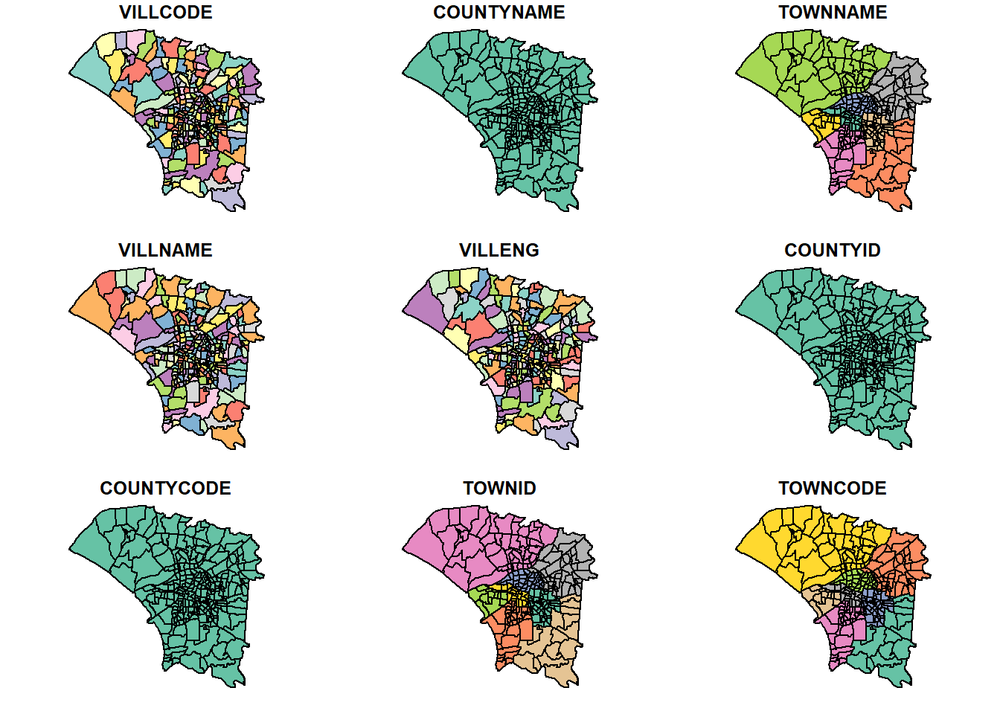
Similar to previous exercises, I will use st_union in order to check for gaps.
tnszu <- st_union(tnsz)
plot(tnszu)I will use the st_remove_holes function from nngeo package.
tnszuh <- st_remove_holes(tnszu)
plot(tnszuh)
3.4 Confining cases
Now I can begin confining the cases to the epidemiology week 31-50, 2023. To be precise, those dates are from 30/07/2023 - 16/12/2023
dd_sf_epiweeks <- dd_sf %>%
filter(Onset >= as.Date("2023-07-30") & Onset <= as.Date("2023-12-16"))Use st_intersection to get the points falling within the study area, and add epiweek column.
d_sf <- st_intersection(dd_sf_epiweeks, tnszu)
d_sf$epiweek <- epiweek(d_sf$Onset)Subsequently, check for duplicate geometry.
dupes <- any(duplicated(tnsz$VILLCODE))
dupes[1] FALSE3.5 Aggregating Dengue Cases
Since we eventually need to show the number of dengue fever cases by village as well, it makes sense to link each case with a village. We can do this using st_join
d_village_sf <- st_join(tnsz, d_sf)d_village_sf <- d_village_sf[!is.na(d_village_sf$VILLCODE), ]Group by village code and epi week, replacing NA values with 31 (start week):
d_village_sf_vc <- d_village_sf %>%
group_by(VILLCODE, VILLENG) %>%
summarise(count = sum(!is.na(epiweek)))
d_village_sf_vc_epi <- d_village_sf %>%
group_by(VILLCODE, epiweek) %>%
summarise(count = sum(!is.na(epiweek)))
d_village_sf_vc_epi$epiweek <- ifelse(is.na(d_village_sf_vc_epi$epiweek), 31, d_village_sf_vc_epi$epiweek)plot(d_village_sf_vc_epi)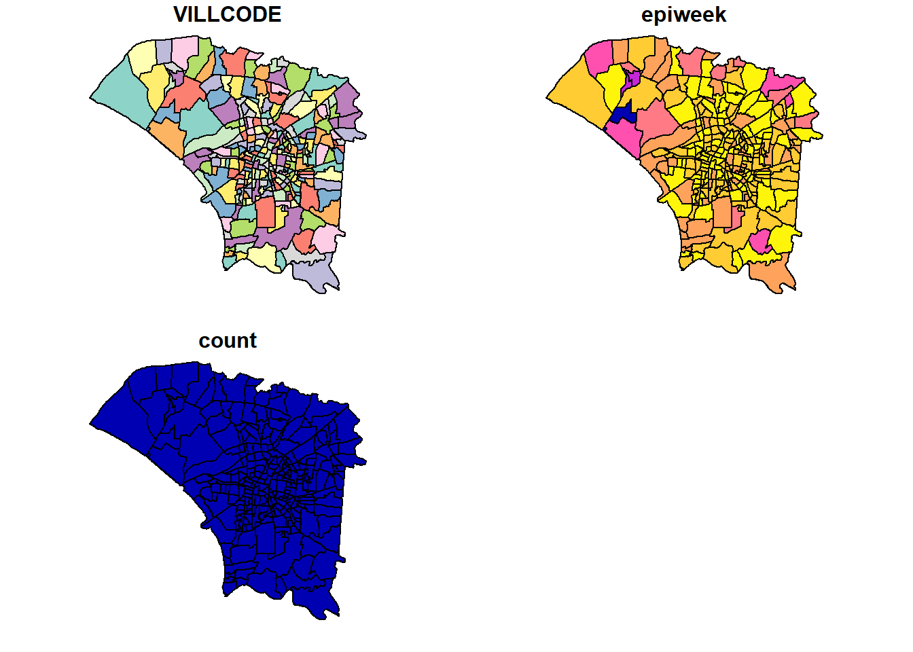
3.6 Spacetime Cube
In order to handle NA values, we can assign a 0 value.
temp <- expand.grid(VILLCODE=unique(d_village_sf_vc_epi$VILLCODE),
epiweek=unique(d_village_sf_vc_epi$epiweek))
merged <- merge(temp, d_village_sf_vc_epi, by=c("VILLCODE", "epiweek"), all.x=TRUE)
merged$count[is.na(merged$count)] <- 0
merged <- select(merged, -geometry)
merged <- st_as_sf(distinct(merge(merged, d_village_sf_vc_epi[, c("VILLCODE", "geometry")],
by="VILLCODE", suffixes=c("", ".y"), all.x=TRUE)))spacetime_cube <- as_spacetime(merged, "VILLCODE", "epiweek")
is_spacetime_cube(spacetime_cube)[1] TRUEwrite_rds(spacetime_cube, "data/rds/spacetime_cube.rds")4.0 Exploratary Data Analysis
I am interested in seeing how the cases are distributed across time. To do this, I will look at the distribution of the cases across the epidiomiology weeks.
tm_shape(d_village_sf_vc_epi) +
tm_polygons(col='white') +
tm_shape(d_village_sf_vc_epi) +
tm_polygons("count",
palette = "Blues",
style="quantile") +
tm_facets(by="epiweek", free.coords = FALSE)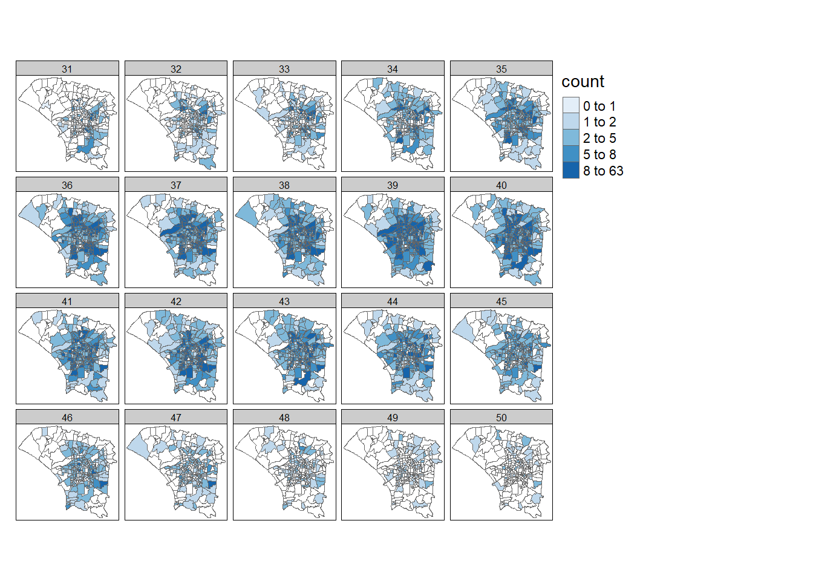
ggplot(d_sf, aes(x = epiweek)) +
geom_bar(fill = "red", color = "black") +
labs(x = "Epidemiology Week", y = "No. of Cases", title = "Cases across Epidemiology Weeks")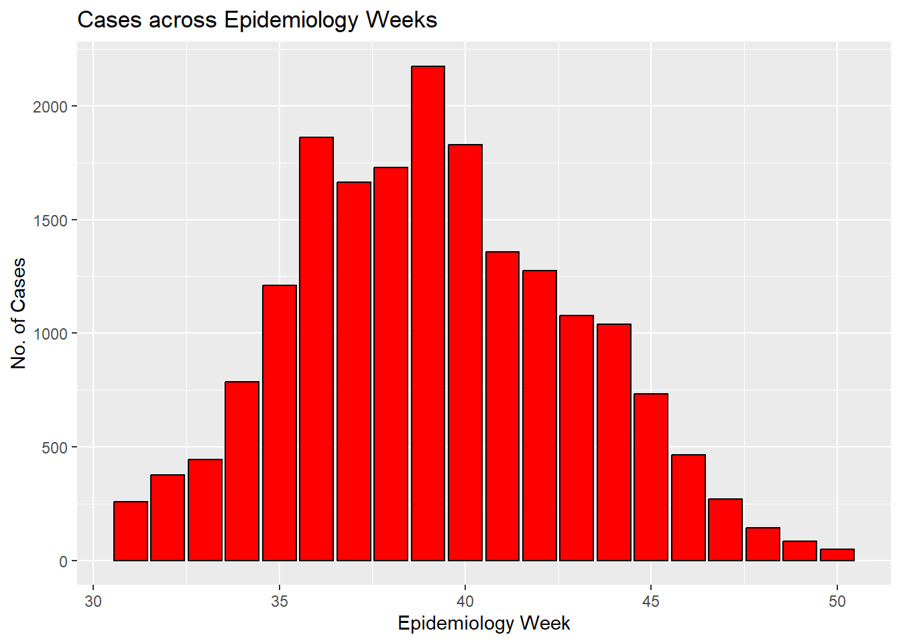
5.0 Global Measures of Spatial Autocorrelation
5.1 Deriving contiguity weights
wm_q.nb <- st_contiguity(d_village_sf_vc, queen=TRUE)
wm_q.wt <- st_weights(wm_q.nb, style="W")
wm_q.count <- d_village_sf_vc$count5.2 Global Moran’s I Test
global_moran_test(wm_q.count,
wm_q.nb,
wm_q.wt)
Moran I test under randomisation
data: x
weights: listw
Moran I statistic standard deviate = 12.869, p-value < 2.2e-16
alternative hypothesis: greater
sample estimates:
Moran I statistic Expectation Variance
0.468370647 -0.003891051 0.001346741 5.3 Global Moran I’s Permutation Test
set.seed(1234)
global_moran_perm(wm_q.count,
wm_q.nb,
wm_q.wt,
nsim=99)
Monte-Carlo simulation of Moran I
data: x
weights: listw
number of simulations + 1: 100
statistic = 0.46837, observed rank = 100, p-value < 2.2e-16
alternative hypothesis: two.sided6.0 Local Measures of Spatial Autocorrelation
6.1 Local Moran’s I
Compute Local Moran’s I, and then appending it to the original dataframe for mapping later on.
lmi <- local_moran(wm_q.count,
wm_q.nb,
wm_q.wt)
d_village_sf_vc <- cbind(d_village_sf_vc, lmi)6.2 Visualizing Local Moran’s I
Using choropleth mapping functions of tmap package, we can plot the local Moran’s I values
map1 <- tm_shape(d_village_sf_vc) +
tm_fill(col="ii",
style="pretty",
palette="RdBu",
title="Local Moran's I of Dengue Cases") +
tm_borders(alpha = 0.5)
map1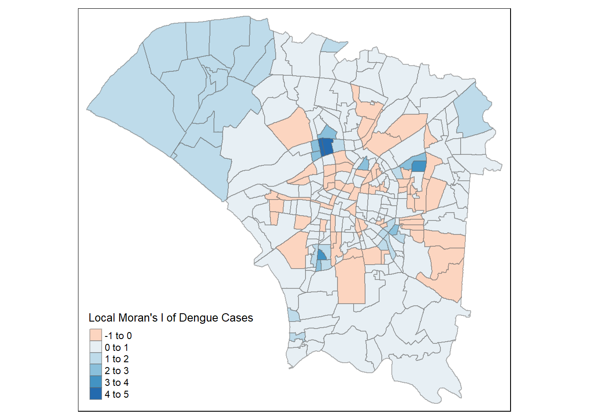
6.3 Mapping Local Moran’s I p-values
tm_shape(d_village_sf_vc) +
tm_fill(col="p_ii_sim",
breaks=c(-Inf, 0.2, 0.4, 0.6, 0.8, 1, Inf),
palette="Blues",
title="Local Moran's I p-values") +
tm_borders(alpha=0.8)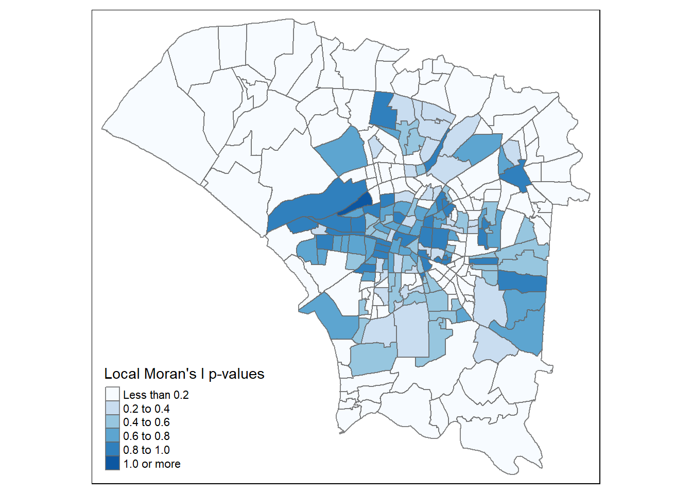
The villages that are darker blue signify more clustering, which are mostly centered in our study area.
map2 <- tm_shape(d_village_sf_vc) +
tm_fill(col="p_ii_sim",
breaks=c(0, 0.001, 0.01, 0.05, 1),
palette="Blues",
title="Local Moran's I p-values") +
tm_borders(alpha=0.9)
tmap_arrange(map1, map2, ncol=2)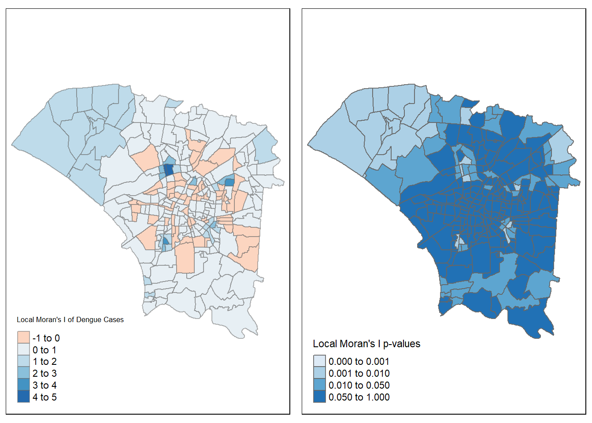
6.4 LISA Map
quadrant <- vector(length=nrow(d_village_sf_vc))
d_village_sf_vc$lag_count <- st_lag(wm_q.count, wm_q.nb, wm_q.wt)
DV <- d_village_sf_vc$lag_count - mean(d_village_sf_vc$lag_count)
LM_I <- lmi[,1]
signif <- 0.05
quadrant[DV <0 & LM_I>0] <- "LOW - LOW"
quadrant[DV >0 & LM_I<0] <- "LOW - HIGH"
quadrant[DV <0 & LM_I<0] <- "HIGH - LOW"
quadrant[DV >0 & LM_I>0] <- "HIGH - HIGH"
quadrant[lmi[,5]>signif] <- 0
d_village_sf_vc$quadrant <- quadrantlisa_sig <- d_village_sf_vc %>%
filter(p_ii < 0.05)
tmap_mode("plot")
map1 <- tm_shape(d_village_sf_vc) +
tm_polygons() +
tm_borders(alpha = 0.5) +
tm_shape(lisa_sig) +
tm_fill("quadrant",
palette="RdBu",
midpoint=0) +
tm_borders(alpha=0.5)
map2 <- tm_shape(d_village_sf_vc) +
tm_polygons("count",
palette="Blues",
style="quantile",
n=10)
tmap_arrange(map1, map2, ncol=2)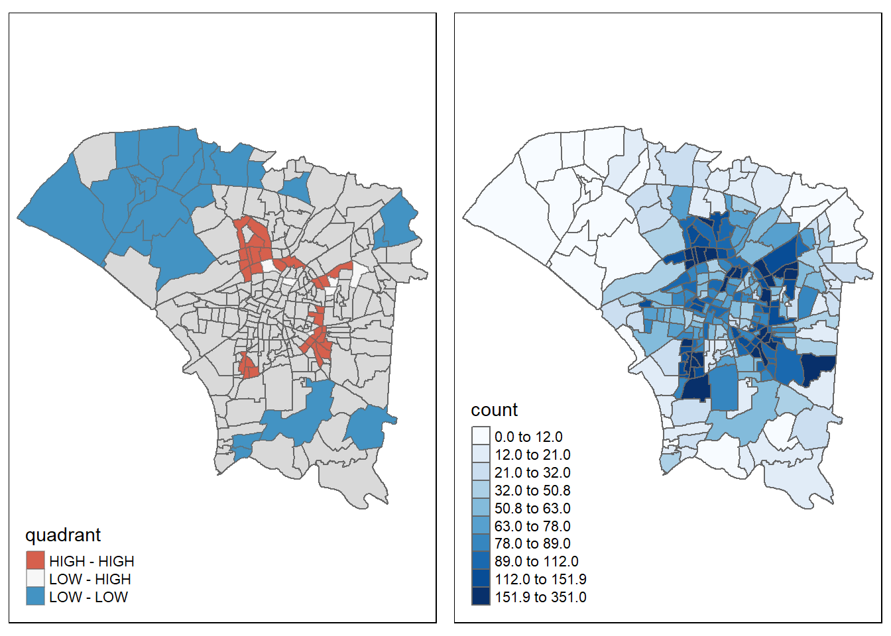
High-high areas, possibly urban centers, show high dengue counts and similar high counts in neighboring areas, suggesting clusters of outbreaks. Low-low areas could represent rural zones with fewer cases, and notably, high-low or low-high areas indicate outliers - regions where dengue case counts significantly differ from their surroundings.
7.0 Hot Spot and Cold Spot Area Analysis
7.1 Computation of Local Gi*
hcsa <- d_village_sf_vc %>%
cbind(local_gstar_perm(wm_q.count,
wm_q.nb,
wm_q.wt,
nsim=99)) 7.2 Visualizing Gi*
tm_shape(hcsa) +
tm_fill("gi_star",
palette="RdBu",
midpoint=0,
title="Gi*") +
tm_borders(alpha=0.5)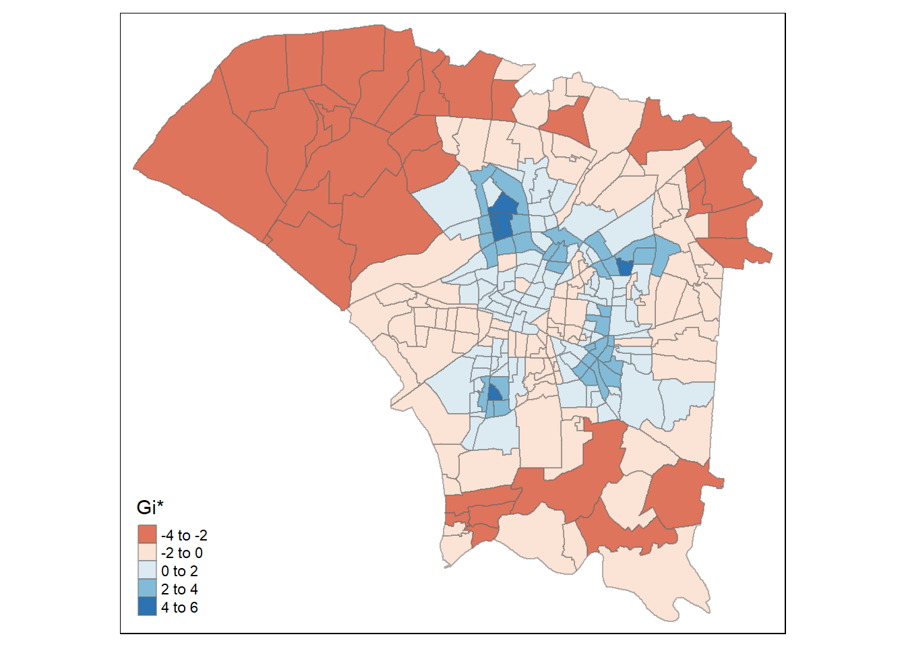
The Gi* values decrease from the center as it spreads out toward the edges of the map, indicating higher random distribution of cases on the towns in the edges (villages).
7.3 Visualizing p-value of HCSA
tm_shape(hcsa) +
tm_fill("p_sim",
palette="RdBu",
midpoint=0) +
tm_borders(alpha=0.5)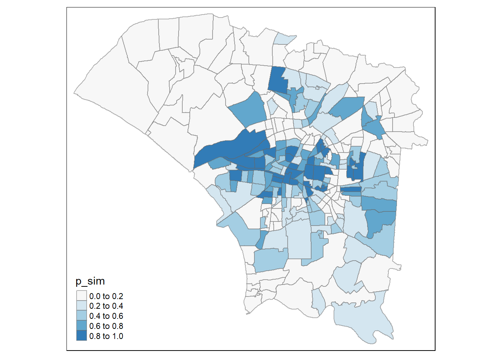
map3 <- tm_shape(hcsa) +
tm_fill("gi_star",
palette="RdBu",
midpoint=0,
title="Gi* of Cases") +
tm_borders(alpha = 0.5)
map4 <- tm_shape(hcsa) +
tm_fill("p_value",
breaks = c(0, 0.001, 0.01, 0.05, 1),
palette="Blues",
title="p-value of Gi*") +
tm_borders(alpha = 0.5)
tmap_arrange(map3, map4, ncol = 2)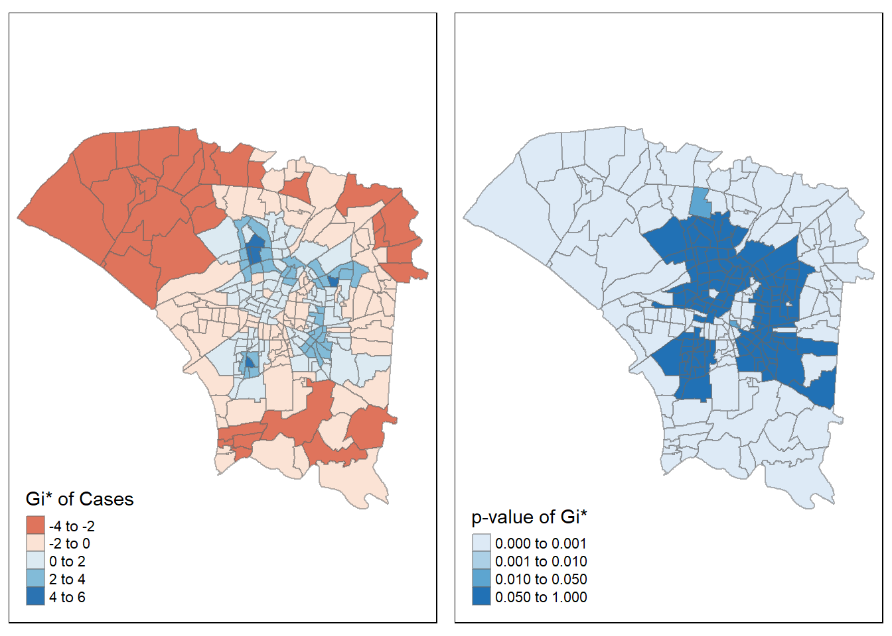
7.4 Visualizing Hot and Cold Spots
hcsa_sig <- hcsa %>%
filter(p_sim < 0.05)
hcsa_sig_map <- tm_shape(hcsa) +
tm_polygons() +
tm_borders(alpha = 0.5) +
tm_shape(hcsa_sig) +
tm_fill("gi_star",
palette="RdBu",
midpoint=0,
title="Gi*") +
tm_borders(alpha = 0.5) +
tm_scale_bar()
tmap_arrange(map1, hcsa_sig_map, ncol = 2)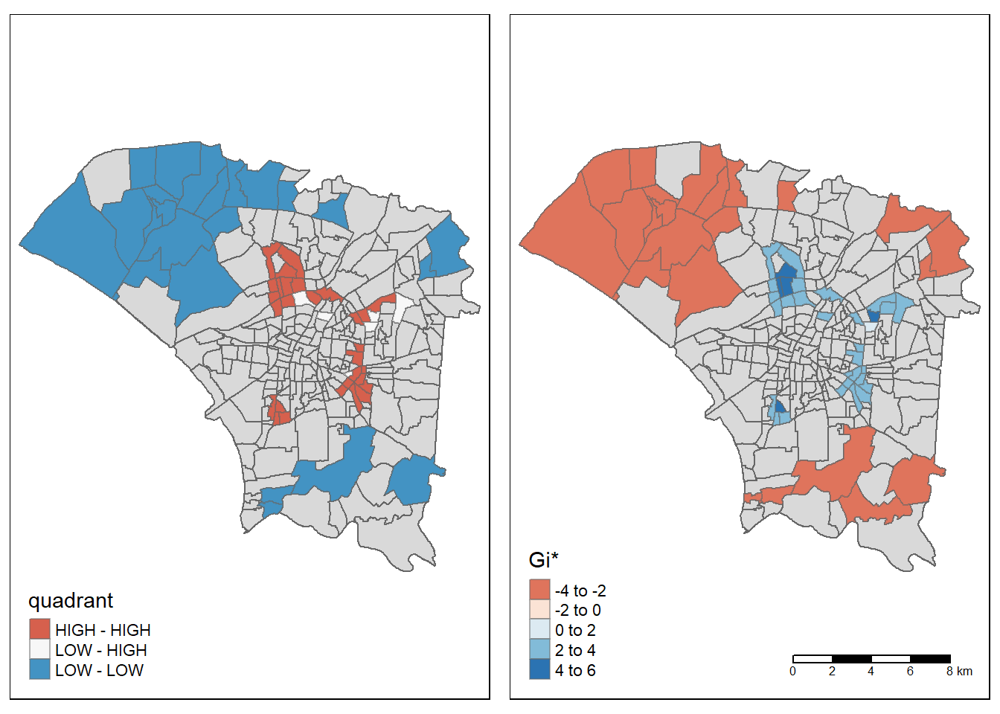
From the above plots, we can see that there are cold spots on the northern and southern parts of the island.
8.0 Emerging Hot Spot Analysis
In this section, we will be analyzing hot and cold spots over 5 weeks at a time, as well as the type of hot/cold spots (e.g. oscillating, persistent, intensifying etc.)
ehsa_spt <- function(cube, week, geom) {
spt_n <- filter(cube, epiweek <= week)
spt_nb <- cube %>%
activate("geometry") %>%
mutate(nb = include_self(st_contiguity(geometry)),
wt = st_inverse_distance(nb, geometry,
scale = 1,
alpha = 1),
.before = 1) %>%
set_nbs("nb") %>%
set_wts("wt")
EHSA <- emerging_hotspot_analysis(x=spt_n,
.var="count",
k=1,
nsim=99)
gghist <- ggplot(data=EHSA,
aes(x=classification)) +
geom_bar(fill="light blue") +
coord_flip()
tn_EHSA <- geom %>%
left_join(EHSA,
by=c("VILLCODE"="location")) %>%
mutate(`p_value` = replace(`p_value`, `p_value` > 0.05, NA),
`classification` = ifelse(is.na(`p_value`), NA, `classification`))
plot(gghist)
tm_shape(tn_EHSA) +
tm_fill(col="classification",
title="Classification",
breaks=c("consecutive coldspot", "consecutive hotspot", "new coldspot", "new hotspot", "no pattern detected", "intensifying coldspot", "intensifying hotspot", "oscilating coldspot", "oscilating hotspot", "persistent coldspot", "persistent hotspot", "sporadic coldspot", "sporadic hotspot"
)) +
tm_borders()
}ehsa_spt(spacetime_cube, 35, tnsz)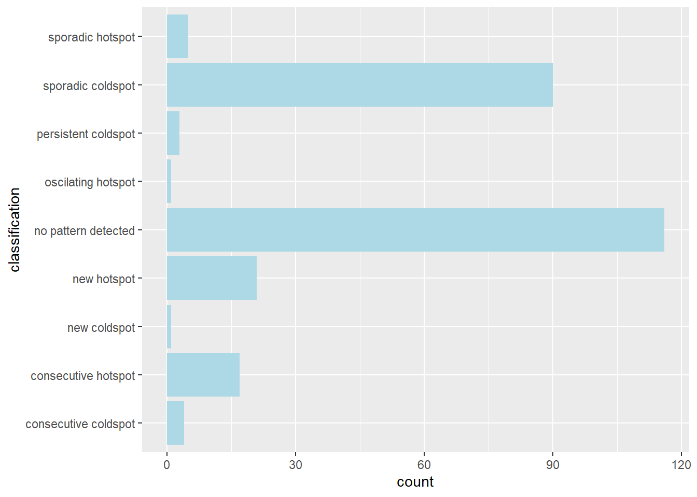
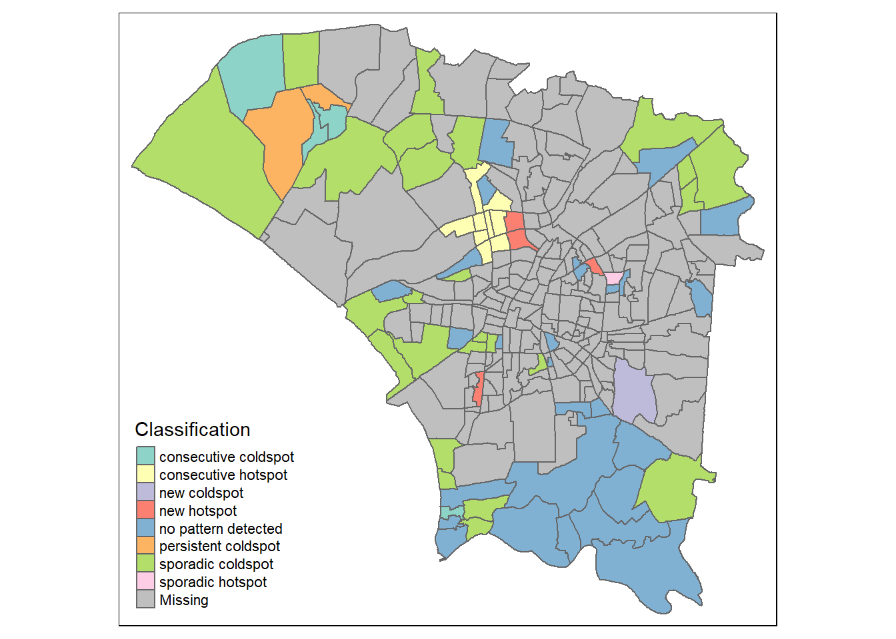
ehsa_spt(spacetime_cube, 40, tnsz)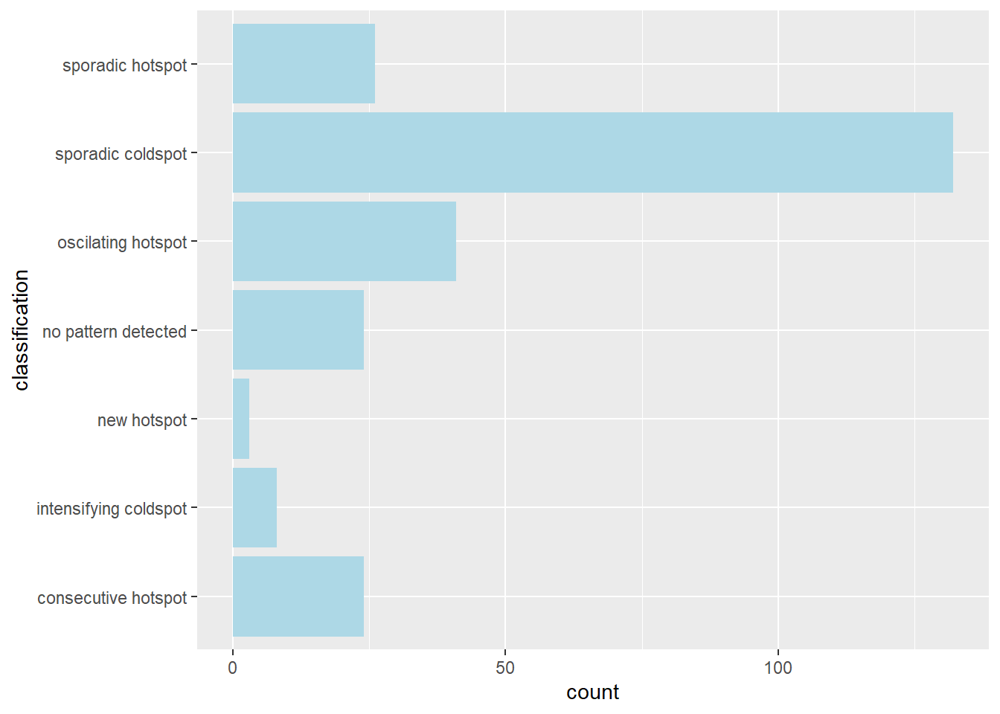
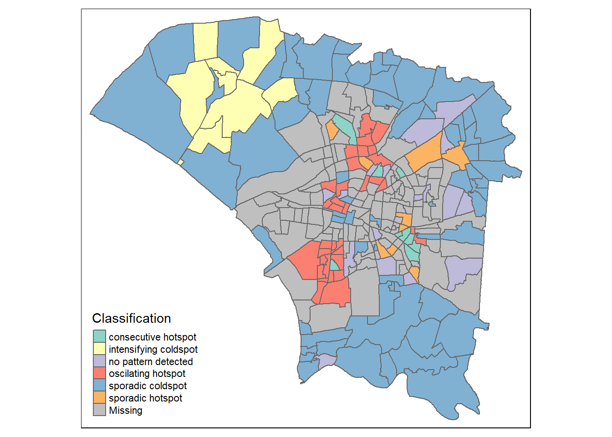
ehsa_spt(spacetime_cube, 45, tnsz)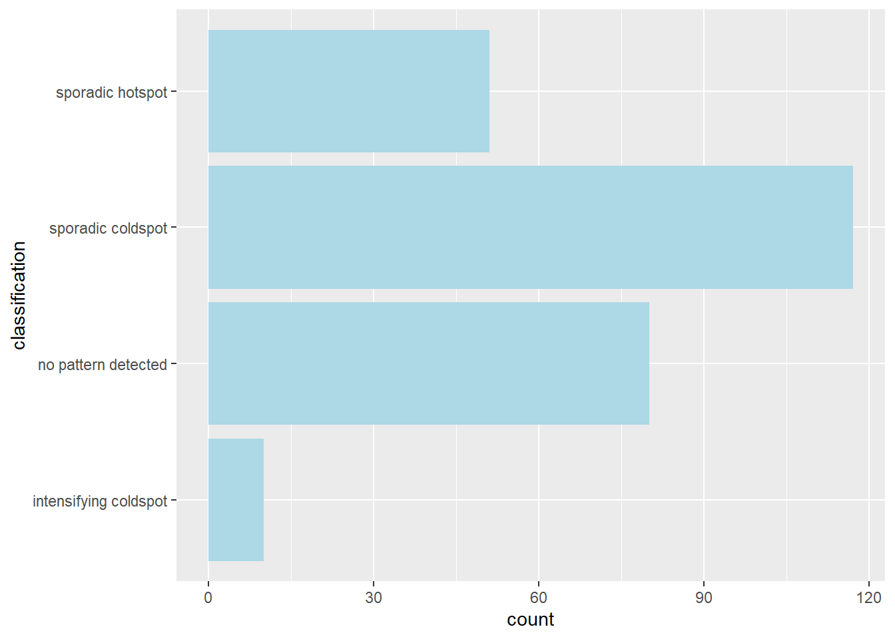
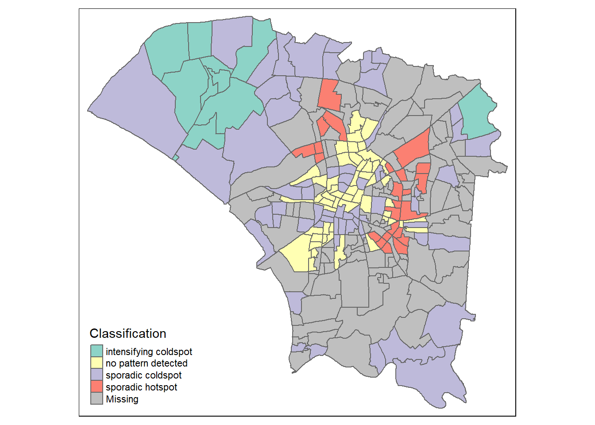
ehsa_spt(spacetime_cube, 50, tnsz)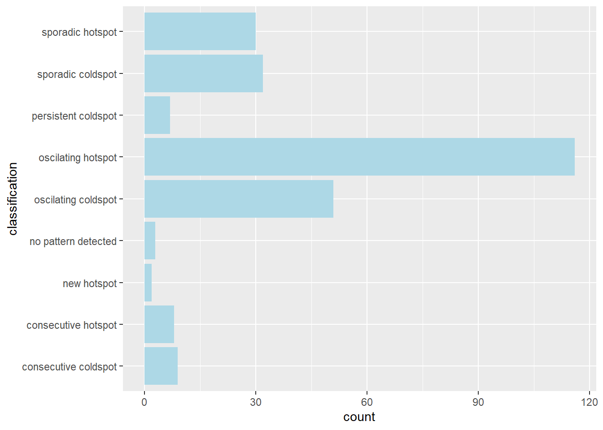
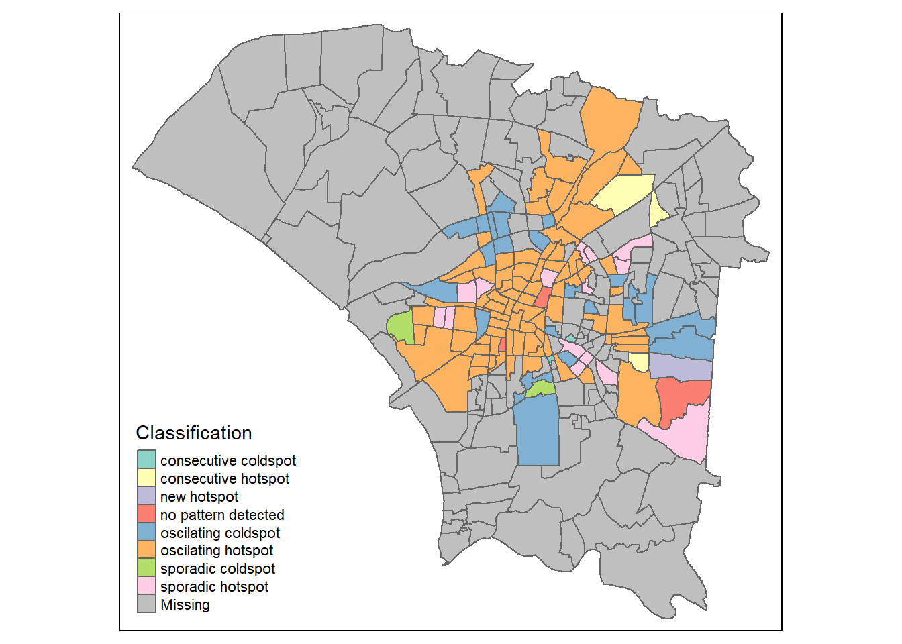
From weeks 30-35, the northern area of the island had predominantly coldspots, while the southern area mostly had no patterns detected, indicating a low number of cases. This suggests a localized outbreak that has not yet spread extensively.
From weeks 30-40, however, we start to see oscillating hotspots appear in the centre. This indicates an unstable pattern of dengue transmission, with potential flare-ups of cases. The containment in the central area suggests some effectiveness of public health measures, preventing the spread to the periphery.
From weeks 30-45, we begin to see the cases dwindling, as there are now many undetected patterns in the centre, while the edges remain the same with many coldspots.
Finally, from weeks 30-50, the edges no longer have anymore colour, however we see that the hotspots have begun spreading from the centre towards the northern region. This could indicate a shift in focus of the outbreak, necessitating attention to the newly affected northern areas.
Overall, these observations suggests a dengue outbreak that is dynamic, with periods of intensification and decline, and a geographic shift of the most affected areas over time. The patterns hint at the effectiveness of control measures in certain areas at certain times, but also at the need for sustained vigilance due to the possible resurgence of the disease and spread to new areas.
9.0 Takeaways
Reflecting on this course’s geospatial analytics module, it’s clear that the journey has been both rigorous and enriching. Through tackling this extensive take-home exercise, I’ve honed my skills in managing spatial data, leveraging R’s powerful sf, spdep, and sfdep packages for intricate analyses. I’ve delved into spatial autocorrelation, interpreting local and global Moran’s I, and have also dabbled in detecting and visualizing hotspots, which brought the theoretical concepts to life.
The path to proficiency (or maybe semi-proficiency) wasn’t straightforward; it demanded persistence and an eagerness to self-learn. I’ve navigated through a multitude of resources, from lecture slides to the valuable projects of seniors and peers. This process wasn’t just about absorbing information but also about cultivating the ability to independently seek answers and piecing together a cohesive understanding from various learning materials.
The experience has been intellectually demanding, yet it provided a comprehensive platform to test and expand my problem-solving capabilities. These technical and analytical skills are not only academic achievements but are transferable to a wide range of real-world applications, setting a strong foundation for future endeavors in data analytics, and I am eager to take on the next challenge of the project, where I am able to flex my creativity as well.